CLP: A Real-World Dataset of Contaminated Lens Protectors for Robust Semantic Segmentation
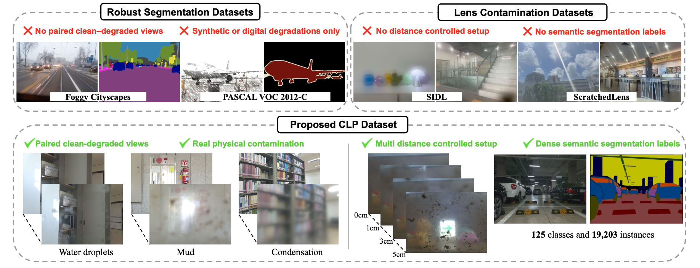
The CLP dataset captures real lens-protector contamination — mud, water droplets, and condensation — across four lens-to-protector distances, paired with dense semantic segmentation masks and aligned restoration targets.
Abstract
The reliability of autonomous systems in real-world environments depends heavily on the robustness of visual perception. However, physical contaminants that adhere to the camera lens or lens protector, such as mud, water droplets, and condensation, remain largely underexplored compared with common synthetic corruptions or weather degradations.
We introduce CLP (Contaminated Lens Protector), a real-world benchmark for evaluating semantic segmentation and image restoration under realistic lens-protector contamination. CLP contains 600 indoor/outdoor scenes captured at 0, 1, 3, and 5 cm lens-to-protector distances, yielding 4,800 degraded images paired with clean references.
CLP also provides dense segmentation annotations with 125 object categories and 19,203 instances. Our benchmark reveals how modern segmentation and restoration models behave under real lens-protector contamination, highlighting the need for robust perception in safety-critical vision.
CLP Dataset
CLP captures real lens-protector contamination using a custom 3D-printed smartphone holder that fixes glass plates at four precise distances in front of the camera lens.
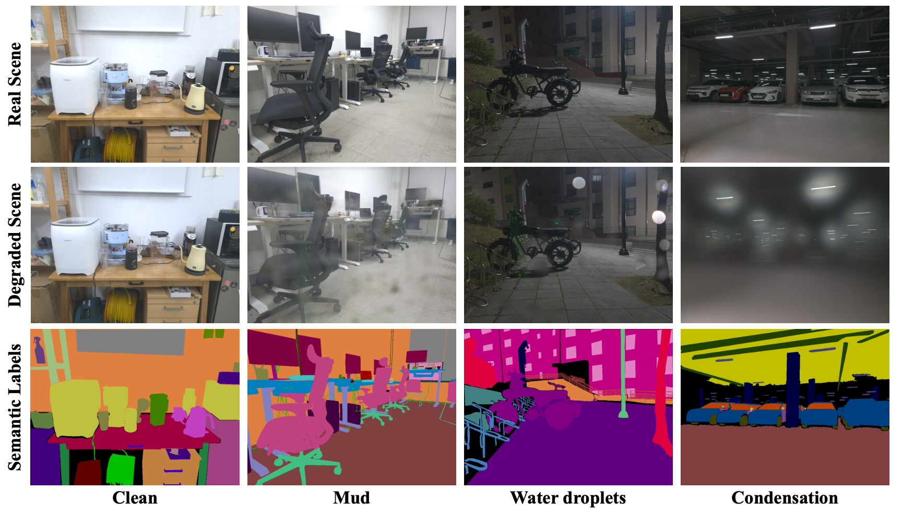
Collection Setup
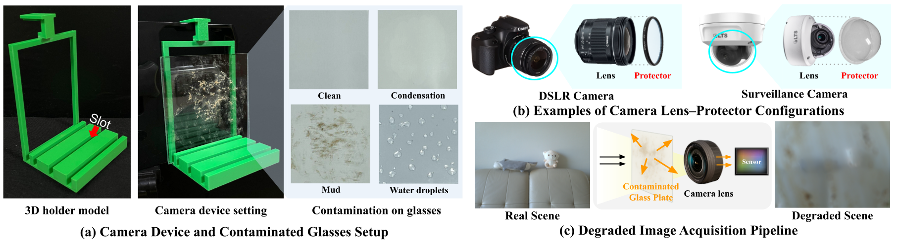
Statistics
600 scenes were captured across diverse indoor/outdoor environments, day/night conditions, and three camera angles (up, horizontal, down). The dataset contains 4,800 degraded images (600 scenes × 2 refs × 4 distances), 125 semantic classes with 19,203 annotated instances, and a 480 / 120 scene train/test split.
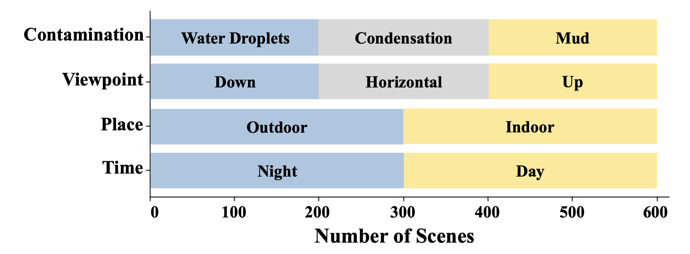
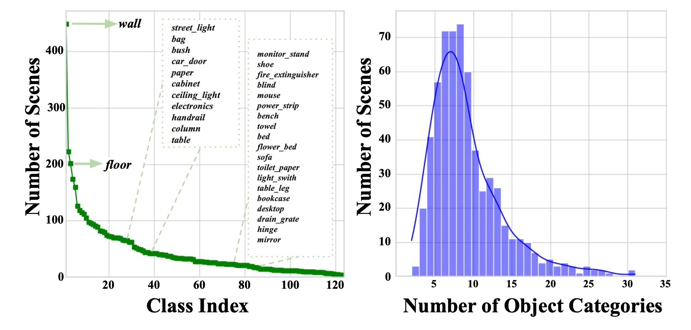
Analysis
The scene-level and object-level distributions show that CLP covers balanced contamination types, viewpoints, places, and lighting conditions, while retaining the long-tailed object distribution typical of real semantic segmentation datasets.
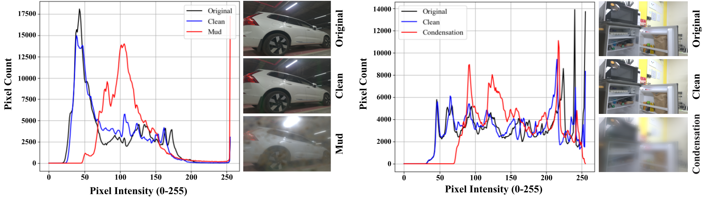
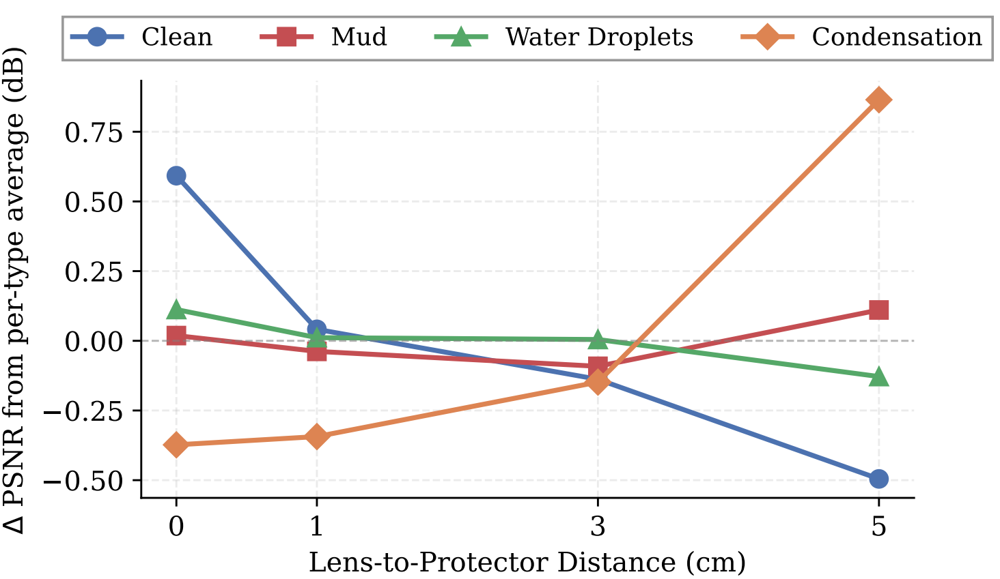
Experiments
Segmentation Results
Domain Generalization methods consistently outperform Domain Adaptation methods, even though they are trained only on clean images while DA methods use unlabeled contaminated data. This suggests that robust, domain-invariant representations matter more than simply adapting to contaminated images. DINOv2 shows the strongest overall robustness, likely due to its large-scale foundation pretraining, and preserves coarse semantic structures even under severe mud contamination at larger lens-to-protector distances.
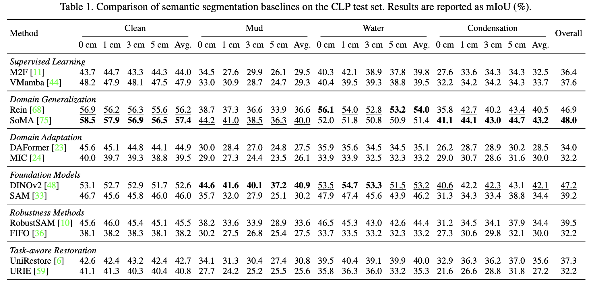
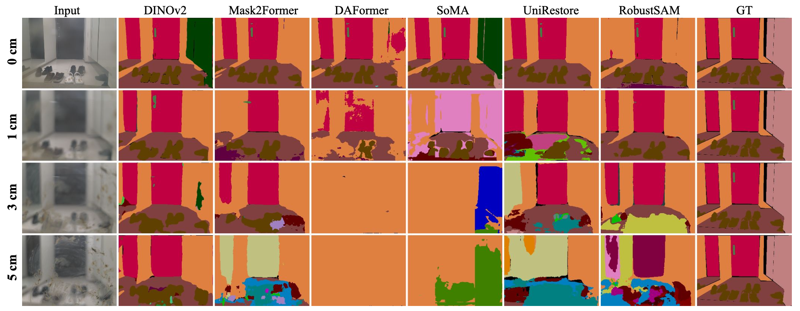
Restoration Results
DiffUIR achieves the best overall restoration performance with 27.92 dB PSNR, followed by UniRestore with 26.85 dB. DiffUIR produces the strongest visual restoration on water and condensation, but visible artifacts remain in severely degraded regions.
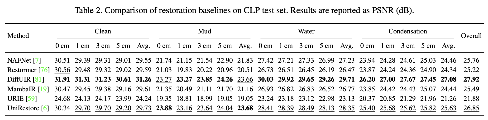
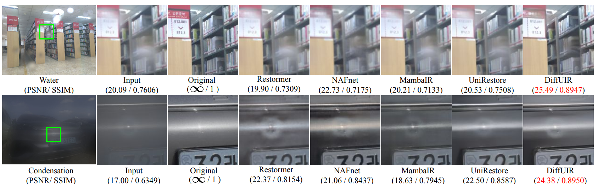
Conclusion
CLP provides a real-world benchmark for robust perception under realistic lens-protector contamination, offering paired images, dense semantic labels, and multi-distance captures. Our experiments establish diverse baselines for segmentation and restoration, revealing that domain generalization and foundation model pretraining are key to robustness.
Current captures are limited to smartphone cameras; extending to automotive or surveillance setups remains future work. Task-aware restoration is a promising direction for improving perception under contamination.
BibTeX
@InProceedings{Park_2026_CVPR,
author = {Park, Sungyong and Choi, Sooyoung and Koh, Hyunsuh and Choi, Youngjae and Kim, Heewon},
title = {CLP: A Real-World Dataset of Contaminated Lens Protectors for Robust Semantic Segmentation},
booktitle = {Proceedings of the IEEE/CVF Conference on Computer Vision and Pattern Recognition (CVPR)},
month = {June},
year = {2026},
pages = {3794-3804}
}